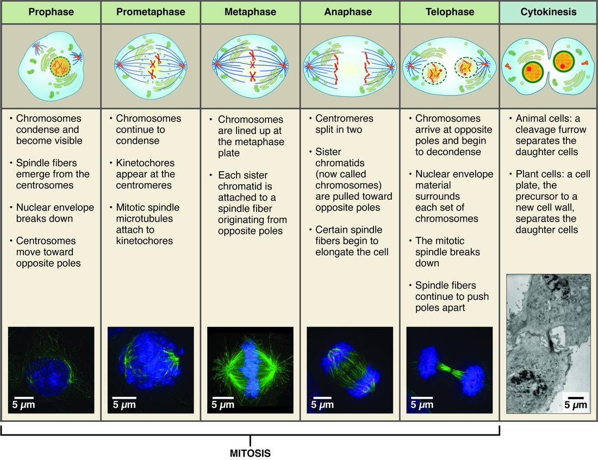

Cell division and differentiation
1Why this matters
Ms. Okafor, 51, starts chemotherapy for breast cancer. Ten days later she has painful mouth sores and her white blood cell count has dropped, but her heart and brain work normally. The drug harms cells that are dividing. Which of her cells divide, and how often, decides where the side effects appear.
2What this builds on
3Quick check before you start
1. A cell has just finished copying its DNA and has not yet divided. How many chromosomes and chromatids does one of your body cells hold at this point?
- 46 chromosomes and 92 chromatids
- 92 chromosomes and 92 chromatids
- 23 chromosomes and 46 chromatids
Show the answer
Copying doubles the DNA but not the chromosome count. Each of the 46 chromosomes is now two sister chromatids joined at the centromere.
- Correct: 46 chromosomes and 92 chromatids:
- 92 chromosomes and 92 chromatids:
- 23 chromosomes and 46 chromatids:
2. What does a transcription factor do?
- It joins amino acids into a chain on the ribosome
- It binds DNA near a gene and raises or lowers that gene's transcription
- It removes introns from the first RNA copy
Show the answer
Transcription factors bind specific DNA sequences near a gene and make RNA polymerase more or less likely to start copying it. The mix a cell holds decides which genes it expresses.
- It joins amino acids into a chain on the ribosome:
- Correct: It binds DNA near a gene and raises or lowers that gene's transcription:
- It removes introns from the first RNA copy:
3. Which part of the cytoskeleton is built from tubulin and can grow and shrink quickly?
- Intermediate filaments
- Actin filaments
- Microtubules
Show the answer
Microtubules are hollow tubes of tubulin that grow from the centrosome and can lengthen or shorten quickly. Actin filaments are thinner, and intermediate filaments are the stable, ropelike ones.
- Intermediate filaments:
- Actin filaments:
- Correct: Microtubules:
4Anatomy

With labels hidden, select a box to reveal its label.
5How it works, step by step
- In G1, a cell receives signals to divide, and its cyclin level rises.Cyclin binds and activates its CDK, and the active pair drives the cell past the G1 checkpoint.
- Past the G1 checkpoint, the cell is committed to the cycle.In S phase, it replicates its DNA, so each chromosome becomes two sister chromatids.
- The G2 checkpoint confirms the DNA is fully and correctly copied.The cell enters mitosis: chromosomes condense and the mitotic spindle forms (prophase).
- Spindle microtubules attach to the kinetochores of every chromosome from both sides.The chromosomes line up on the metaphase plate, and the spindle checkpoint is satisfied (metaphase).
- The proteins holding the sister chromatids together are cut, and the kinetochore microtubules shorten.The chromatids move to opposite ends of the cell (anaphase).
- A full set of chromosomes arrives at each end.A nuclear envelope re-forms around each set (telophase), and an actin–myosin ring pinches the cell in two (cytokinesis).
6Core concepts
7A common mistake
The wrong idea: Cells specialize by losing the genes they do not need.
What actually happens: A specialized cell keeps the whole genome. Differentiation changes which genes are switched on: each cell type holds its own mix of transcription factors, and those decide which genes it expresses. The proof is that adult skin cells can be turned back into pluripotent stem cells by switching on a few transcription factors. That would be impossible if the genes for other cell types had been thrown away.
8Check yourself
Anything you miss goes into your review queue.
1. A cell in G1 contains 6 picograms of DNA. How much DNA does it contain in G2, and how much does each daughter cell contain after cytokinesis?
- 6 pg in G2; 3 pg in each daughter
- 12 pg in G2; 12 pg in each daughter
- 12 pg in G2; 6 pg in each daughter
- 6 pg in G2; 6 pg in each daughter
Show the answer
S phase doubles the DNA, so G2 holds 12 pg. Mitosis and cytokinesis split it evenly, so each daughter returns to 6 pg, the same as the parent in G1.
- 6 pg in G2; 3 pg in each daughter: This skips S phase. The DNA doubles before division, so the daughters are not left with half.
- 12 pg in G2; 12 pg in each daughter: Division splits the doubled DNA between two cells. Each daughter receives half of the 12 pg.
- Correct: 12 pg in G2; 6 pg in each daughter: Correct. Doubled in S, then halved at division.
- 6 pg in G2; 6 pg in each daughter: The DNA is replicated in S phase, so G2 holds twice the G1 amount.
2. How many chromosomes does one of your dividing body cells contain during anaphase, before cytokinesis?
- 23
- 46
- 92
- 184
Show the answer
In anaphase the 46 pairs of sister chromatids separate, and each separated chromatid counts as a chromosome. The cell briefly holds 92 chromosomes, 46 moving to each end.
- 23: 23 is the count in an egg or sperm cell. Mitosis never halves the chromosome number.
- 46: 46 is the count through metaphase, when sister chromatids are still joined. Once they separate, each is its own chromosome.
- Correct: 92: Correct. 46 chromatid pairs become 92 separate chromosomes.
- 184: This doubles the count twice. The DNA is replicated only once per cycle.
3. A woman with breast cancer receives paclitaxel, a drug that binds microtubules and stops them from growing or shrinking. At which point are her dividing tumor cells held?
- In G1, at the G1 checkpoint
- In S phase, partway through replicating its DNA molecules
- In G0, as resting cells
- In mitosis, before sister chromatids separate
Show the answer
The mitotic spindle is built from microtubules that must grow and shrink to capture and pull chromosomes. Frozen microtubules cannot attach and pull correctly, so the spindle checkpoint keeps sister chromatids together and holds the cell in mitosis, where many cells die.
- In G1, at the G1 checkpoint: The G1 checkpoint checks size, nutrients, signals and DNA damage. Microtubules are not needed to pass it.
- In S phase, partway through replicating its DNA molecules: DNA replication uses DNA polymerase and helicase, not microtubules.
- In G0, as resting cells: The drug acts on dividing cells. It does not send them into G0, and cells already in G0 are largely unaffected.
- Correct: In mitosis, before sister chromatids separate: Correct. The spindle cannot work, so the spindle checkpoint stops the cell in mitosis.
4. A cell has lost both working copies of the gene for p53. Its DNA is then damaged by radiation. What is the most likely outcome?
- It stops at the G1 checkpoint and waits until the damage is repaired
- It triggers apoptosis at once
- It keeps dividing and passes the damage to its descendants
- It enters G0 permanently
Show the answer
p53 senses DNA damage and responds by halting the cycle or, if the damage is too great, triggering apoptosis. Without p53, neither response happens, so the cell divides with its damaged DNA and its descendants inherit the resulting mutations. That is why TP53 is a tumor suppressor gene.
- It stops at the G1 checkpoint and waits until the damage is repaired: Halting at the G1 checkpoint in response to DNA damage depends on p53, which this cell lacks.
- It triggers apoptosis at once: Damage-triggered apoptosis also depends on p53. Without it, the cell does not self-destruct.
- Correct: It keeps dividing and passes the damage to its descendants: Correct. With no p53, damaged cells keep dividing, and mutations pile up.
- It enters G0 permanently: Leaving the cycle is not the default response to DNA damage. Without p53, the cell has no signal to stop.
5. A student describes mitosis. Which step contains the error?
- Prophase: chromatin condenses and the spindle forms from the centrosomes.
- Metaphase: sister chromatids separate and move to opposite ends of the cell.
- Anaphase: kinetochore microtubules shorten, pulling chromatids apart.
- Telophase: nuclear envelopes re-form around each set, and the chromosomes loosen back into chromatin.
Show the answer
In metaphase the chromosomes line up on the metaphase plate with sister chromatids still joined. They separate in anaphase, and the spindle checkpoint prevents that until every chromosome is attached.
- Prophase: chromatin condenses and the spindle forms from the centrosomes.: This step is right. Prophase condenses the chromosomes and builds the spindle.
- Correct: Metaphase: sister chromatids separate and move to opposite ends of the cell.: This is the error. Metaphase is when the chromosomes line up; separation is anaphase.
- Anaphase: kinetochore microtubules shorten, pulling chromatids apart.: This step is right. Shortening kinetochore microtubules pull the chromatids apart in anaphase.
- Telophase: nuclear envelopes re-form around each set, and the chromosomes loosen back into chromatin.: This step is right. Telophase rebuilds the two nuclei.
6. A drug stops myosin from pulling on actin filaments. A cell treated during mitosis completes telophase. What will it look like?
- Two normal daughter cells
- One cell with two nuclei
- One cell whose chromosomes never separated
- Two cells, each without a nucleus
Show the answer
Cytokinesis depends on a ring of actin and myosin tightening to form the cleavage furrow. Mitosis itself uses spindle microtubules, so it finishes, leaving two nuclei in one undivided cell.
- Two normal daughter cells: Without the contractile ring, no cleavage furrow forms, so the cell does not split.
- Correct: One cell with two nuclei: Correct. Mitosis completes, but cytokinesis fails.
- One cell whose chromosomes never separated: Chromosomes are separated by spindle microtubules, which the drug does not affect.
- Two cells, each without a nucleus: The nuclei form normally in telophase. The problem is that the cytoplasm is not divided.
7. One intestinal stem cell gives rise to an absorptive cell covered with microvilli and to a cell that secretes digestive enzymes. What makes these two cells different?
- Each lost the genes the other one uses
- They carry different numbers of chromosomes
- One of them took up extra genes from a neighboring cell during its development in the lining
- They hold different transcription factors, so they express different genes
Show the answer
Differentiation works through gene expression. Each cell holds a different mix of transcription factors, which switch on different genes. The proteins made from those genes build microvilli in one cell and digestive enzymes in the other. The genome is the same.
- Each lost the genes the other one uses: Differentiated cells keep their whole genome; unused genes are switched off, not removed. Induced pluripotent stem cells show that the genes are still there.
- They carry different numbers of chromosomes: Both are somatic cells made by mitosis, so both carry 46 chromosomes.
- One of them took up extra genes from a neighboring cell during its development in the lining: Cells do not pick up genes from their neighbors. Both carry the genome they inherited from the stem cell.
- Correct: They hold different transcription factors, so they express different genes: Correct. Same genome, different genes switched on.
9Summary
The cell cycle is interphase (G1, S and G2, with DNA replicated in S) followed by the mitotic phase. Cells that stop dividing rest in G0. Cyclins switch on CDKs, which drive the cell forward, and checkpoints in G1, at the end of G2 and during mitosis pause it until conditions are met. Mitosis divides the nucleus of a somatic cell in four phases, prophase, metaphase, anaphase and telophase, giving two identical nuclei; cytokinesis then splits the cytoplasm with an actin–myosin ring. Stem cells renew themselves and give rise to specialized cells; their potency ranges from totipotent to unipotent. Differentiation works by switching genes on and off, not by losing them. Apoptosis removes cells in an orderly way. Cancer arises when mutations in oncogenes and tumor suppressor genes let a cell divide without control and escape apoptosis.